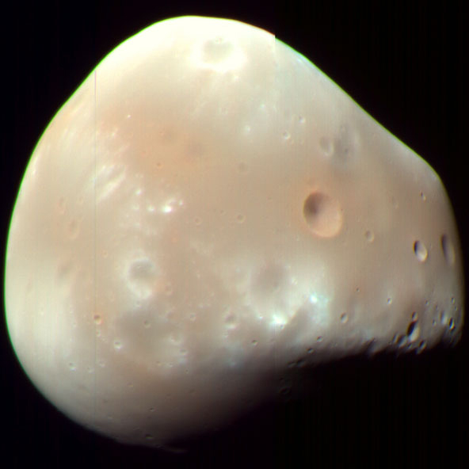

Mars' Moons

Phobos
Enhanced-color HiRISE image of Phobos, showing a series of mostly parallel grooves and crater chains, with its crater Stickney at right.
- Diameter (km)
- 11 km
- Mass (kg)
- 1.0659×1016 kg
- Orbital period
- 7 h 39.2 min

Deimos
Microscopic photo taken by Opportunity showing a gray hematite concretion, indicative of the past presence of liquid water.
- Diameter (km)
- 6.2 km
- Mass (kg)
- 1.4762×1015 kg
- Orbital period
- 30.312 h